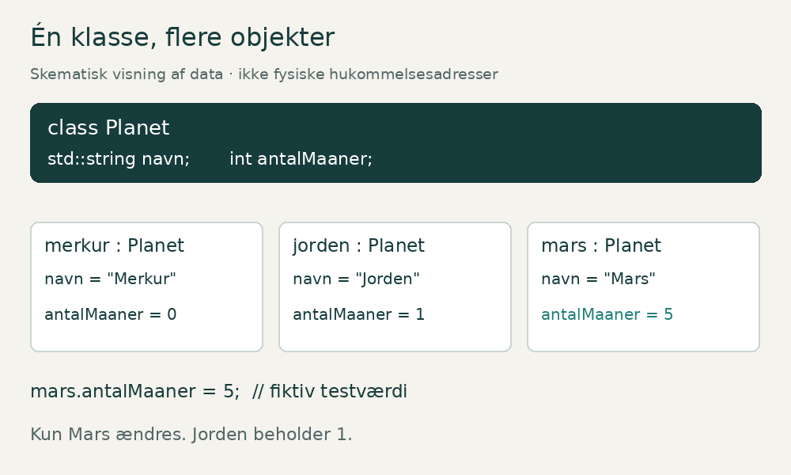
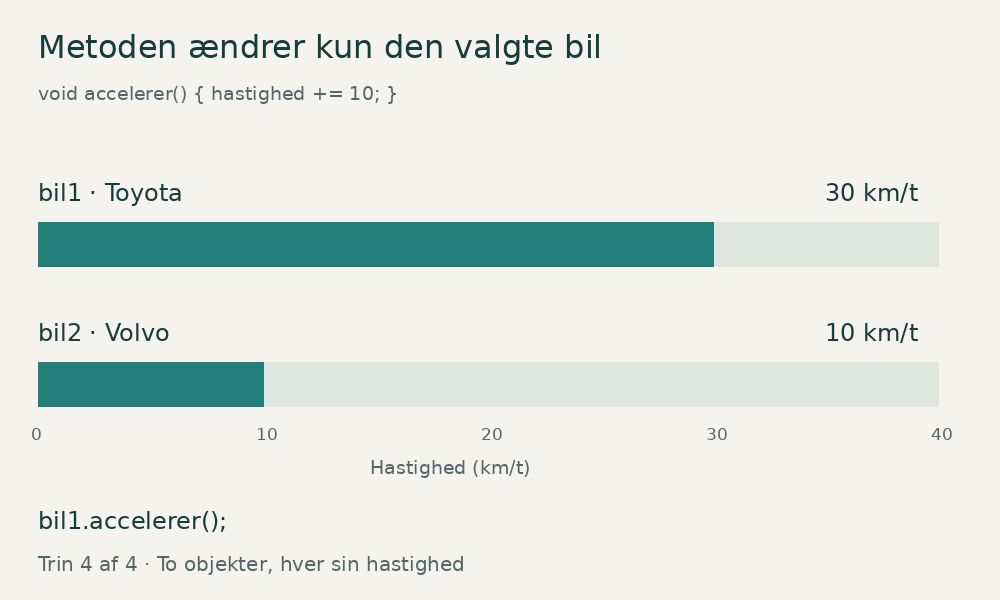

Klasser og
objekter i C++
Opret en planet. Ændr dens data. Se, hvorfor de andre objekter beholder deres værdier. Lær gennem syv små forsøg med feedback.
Start med klasse og objektnavn · antalMaaner"Jorden"
måner: 1"Mars"
måner: 2Simulation af C++ · ingen compiler · data gemmes kun i denne åbne fane. Opgaverne er selvstændige; lab 5 starter med Mars på 2 måner.
Vis hint
Klasser og objekter i C++
En begyndervenlig artikel med animerede illustrationer, programmer og øvelser.
Når et program bliver større, har vi brug for at holde styr på ting, der både har oplysninger og kan udføre handlinger. En planet har eksempelvis et navn og et antal måner. En bil har en hastighed, og den kan accelerere. En studerende har en alder, som ændrer sig, når personen har fødselsdag.
I C++ kan vi samle sådanne oplysninger og handlinger i klasser. Når vi bruger en klasse til at skabe en konkret planet, bil eller studerende i programmet, får vi et objekt.
Artiklen begynder med planeter og bygger gradvist videre til constructors, metoder og adgangskontrol. Til sidst kan du afprøve forståelsen med opgaver og løsningsforslag.
Sådan bruger du materialet
Åbn filen til det interaktive OOP-lab
GitHubs filvisning viser HTML som kildekode. For at bruge knapperne: vælg Code → Download ZIP, pak repositoryet ud, og åbn interactive/klasser-og-objekter.html i din browser. Labbet kører lokalt uden installation og uden internet. Det simulerer C++-kodens virkning; det er ikke en C++-compiler.
| Her i artiklen | I det interaktive lab |
|---|---|
| Animerede GIF-billeder og forklarende diagrammer | Ændr objekter og se data opdatere |
| Komplette C++-programmer | Constructor med egne startværdier |
| Fold-ud-løsninger til opgaverne | Syv opgaver med hint og feedback |
| Tekstforklaringer til alle billeder | Start/stop af animationer og nulstilling af øvelser |
Forslag til undervisning: Læs ét afsnit, forudsig resultatet, afprøv det i labbet, og forklar resultatet til en makker. Gem gerne en ændret udgave af de komplette kodeeksempler.
OOP betyder objektorienteret programmering
OOP samler data og adfærd i objekter. Denne artikel arbejder især med klasser, objekter og indkapsling. Abstraktion er også med: vi bruger en lille model af en planet eller bil og vælger kun de egenskaber, opgaven kræver.
| Begreb | Konkret betydning |
|---|---|
| Klasse | Beskriver struktur og metoder, fx Planet |
| Objekt | En konkret instans, fx mars |
| Abstraktion | Planet-modellen viser navn, måner og afstand, men udelader andre detaljer |
| Indkapsling | Bil beskytter hastigheden med private og giver adgang gennem metoder |
| Arv (næste trin) | En klasse kan bygge på en anden klasse |
| Polymorfi (næste trin) | En fælles grænseflade kan give forskellig adfærd, fx gennem virtuelle metoder |
Arv og polymorfi kræver egne eksempler og er ikke nødvendige for at løse dette labs opgaver.
Billeder: GIF-filerne nedenfor animerer automatisk. De tilsvarende stillbilleder og tekstforklaringer giver samme faglige indhold uden bevægelse. I labbet bestemmer du selv, om animationerne kører.
1. Hvad er en klasse?
En klasse beskriver en type, som vi selv definerer. Du kender måske allerede de indbyggede typer int og double. Med class kan du definere en ny type som Planet.
Forestil dig et tomt skema med felterne navn, antal måner og afstand til Solen. Skemaets opbygning svarer til klassen. Et udfyldt skema for Mars svarer til et objekt.
En enkel klasse kan se sådan ud:
class Planet
{
public:
std::string navn;
int antalMaaner = 0;
double afstandTilSolen = 0.0;
};
navn, antalMaaner og afstandTilSolen er medlemsvariabler. De beskriver de data, hvert objekt har. std::string gemmer tekst, int gemmer et heltal, og double gemmer et decimaltal.
Startværdierne 0 og 0.0 gør de numeriske medlemmer veldefinerede, når vi opretter et objekt uden andre startværdier. En standardoprettet std::string er tom. Afstanden 0.0 er her en startværdi i programmet, ikke en oplysning om en virkelig planet.
Klassen slutter med };. Semikolonet efter klammen er nødvendigt i C++.
2. Hvad er et objekt?
Et objekt er en konkret instans af en type. Når vi skriver:
Planet mars;
opretter vi et objekt med navnet mars og typen Planet. Derefter kan vi give det værdier:
mars.navn = "Mars";
mars.antalMaaner = 2;
mars.afstandTilSolen = 227.9;
Punktummet betyder, at vi vælger et medlem i et bestemt objekt. mars.navn er derfor navnefeltet i objektet mars.
Der er forskel på mars og "Mars". Det første er et navn, vi bruger i kildekoden. Det andet er en tekstværdi, som programmet gemmer i objektet. Vi kunne godt kalde objektet planet1 og stadig gemme teksten "Mars" i det.
| Kode | Betydning |
|---|---|
Planet |
Klassen og typen |
mars |
Navnet på et bestemt objekt |
"Mars" |
En tekstværdi |
mars.antalMaaner |
En medlemsvariabel i objektet |
mars.visInfo() |
Et kald til objektets metode, når metoden er defineret |
3. Hvorfor er Planet en bedre klasse end Univers?
Merkur, Jorden og Mars er planeter. Derfor er Planet en passende fælles klasse for dem.
Universet indeholder planeter. Det er en anden relation. Hvis vi laver klassen Univers, vil et objekt af den klasse repræsentere et helt univers. Det kunne senere indeholde en samling af Planet-objekter.
Når du vælger klasser, hjælper spørgsmålet: »Hvilken slags ting er dette objekt?« Mars er en planet. En Toyota er en bil. Anna er en studerende. De svar giver os forslag til klasserne Planet, Bil og Studerende.
Klassens struktur som diagram
Planet: navn, antalMaaner, afstandTilSolen, visInfo() og harMaaner().
Diagrammet viser en klasse med data og metoder. Plus-tegnet betyder offentlig adgang (public). Det viser ikke de konkrete værdier i et objekt. Dem ser du i animationen nedenfor.
4. Samme klasse, forskellige data
Vi kan oprette mange objekter fra den samme klasse. De almindelige, ikke-statiske medlemsvariabler tilhører hvert sit objekt.

Se samme figur uden animation.

Animationen er et skematisk billede af objekternes data, ikke et præcist kort over computerens hukommelse.
Animationen viser først klassen, derefter objekterne merkur, jorden og mars. Til sidst ændres Mars' antal måner fra 2 til den fiktive testværdi 5. Merkur beholder 0, og Jorden beholder 1. Vi ændrer en model i et program, ikke den virkelige planet.
Det samme princip gælder denne kode:
Planet jorden;
jorden.antalMaaner = 1;
Planet mars;
mars.antalMaaner = 2;
mars.antalMaaner = 5;
Efter den sidste linje er jorden.antalMaaner stadig 1. Dette er en vigtig grund til at bruge objekter: Vi kan arbejde med én bestemt ting uden at blande dens data sammen med de andre tings data.
5. Metoder: funktioner, der tilhører klassen
En klasse kan også indeholde funktioner. De kaldes medlemsfunktioner eller metoder.
Metoden visInfo() kan læse et objekts data og udskrive dem:
void visInfo() const
{
std::cout << navn << " har "
<< antalMaaner << " maaner.\n";
}
Denne metode skal placeres inde i Planet-klassen i vores eksempel. Når vi skriver mars.visInfo(), bruger metoden værdierne i mars. Når vi skriver jorden.visInfo(), bruger den værdierne i jorden.
void betyder, at metoden ikke returnerer en værdi til den kode, der kalder den. Den udskriver tekst som sin handling.
6. Hvad betyder const?
const efter en medlemsfunktions parameterliste fortæller, at funktionen ikke må ændre objektets almindelige medlemsvariabler gennem dette kald. Det er nyttigt for metoder, der kun skal læse oplysninger.
bool harMaaner() const
{
return antalMaaner > 0;
}
Metoden returnerer enten true eller false. Har objektet værdien 2 i antalMaaner, bliver resultatet true. Har det værdien 0, bliver resultatet false.
Et kald til mars.harMaaner() ændrer ikke antallet. Gentager vi kaldet, læser vi blot værdien igen. const gør ikke hele objektet permanent uforanderligt. Andre, ikke-const metoder kan stadig ændre det, hvis objektet tillader det.
C++ har mere avancerede undtagelser, blandt andet medlemmer erklæret med
mutable. De er ikke nødvendige i disse begynderøvelser.
7. Constructoren giver objektet en starttilstand
Det er besværligt at oprette et objekt og derefter udfylde alle felterne manuelt. En constructor gør det muligt at give startværdier, når objektet oprettes.
Planet(std::string planetNavn, int maaner, double afstand)
: navn(planetNavn),
antalMaaner(maaner),
afstandTilSolen(afstand)
{
}
Constructoren hedder det samme som klassen. Den har ingen returtype, heller ikke void.
Delen efter kolon er en initialiseringsliste. Her initialiserer navn(planetNavn) medlemmet navn med værdien fra parameteren planetNavn. De øvrige linjer gør det samme for de andre medlemmer. Medlemmer initialiseres i den rækkefølge, de er erklæret i klassen; vores liste følger samme rækkefølge.
Nu kan vi skrive:
Planet mars("Mars", 2, 227.9);
Kaldet giver constructoren tre argumenter. Constructoren bruger dem til at oprette et objekt med en meningsfuld starttilstand.
| Argument | Parameter | Medlemsvariabel |
|---|---|---|
"Mars" |
planetNavn |
navn |
2 |
maaner |
antalMaaner |
227.9 |
afstand |
afstandTilSolen |
Når klassen kun har denne constructor med tre parametre, kan vi ikke længere skrive Planet mars;. Så skal vi enten give argumenterne eller også definere en constructor uden argumenter. Eksemplerne med manuel tildeling tidligere i artiklen brugte den første, enklere udgave af klassen.
8. Komplet program med planeter
Gem programmet som planeter.cpp. De angivne afstande er afrundede gennemsnitsværdier i millioner kilometer, ikke planeternes aktuelle afstande.
#include <iostream>
#include <string>
class Planet
{
public:
std::string navn;
int antalMaaner;
double afstandTilSolen;
Planet(std::string planetNavn, int maaner, double afstand)
: navn(planetNavn),
antalMaaner(maaner),
afstandTilSolen(afstand)
{
}
void visInfo() const
{
std::cout << navn << " har " << antalMaaner
<< " maaner og en gennemsnitlig afstand paa "
<< afstandTilSolen << " millioner km.\n";
}
bool harMaaner() const
{
return antalMaaner > 0;
}
bool erTaetterePaaSolenEndJorden() const
{
return afstandTilSolen < 149.6;
}
};
int main()
{
Planet merkur("Merkur", 0, 57.9);
Planet jorden("Jorden", 1, 149.6);
Planet mars("Mars", 2, 227.9);
merkur.visInfo();
jorden.visInfo();
mars.visInfo();
std::cout << std::boolalpha;
std::cout << "Mars har maaner: " << mars.harMaaner() << '\n';
std::cout << "Merkur er taettere paa Solen end Jorden: "
<< merkur.erTaetterePaaSolenEndJorden() << '\n';
return 0;
}
#include <string> giver adgang til std::string, og #include <iostream> giver blandt andet adgang til std::cout. Programmet starter i main(). std::boolalpha får boolske resultater til at blive vist som true og false i stedet for 1 og 0.
Programmet udskriver:
Merkur har 0 maaner og en gennemsnitlig afstand paa 57.9 millioner km.
Jorden har 1 maaner og en gennemsnitlig afstand paa 149.6 millioner km.
Mars har 2 maaner og en gennemsnitlig afstand paa 227.9 millioner km.
Mars har maaner: true
Merkur er taettere paa Solen end Jorden: true
Den enkle udskriftsmetode bruger samme ordform for alle antal. Det holder fokus på programmeringskonceptet.
9. public og private
I Planet-eksemplet er medlemmerne public. Det betyder, at kode uden for klassen kan tilgå dem direkte. Derfor kan vi skrive mars.antalMaaner = 5; i main().
private begrænser denne direkte adgang. Klassens egne metoder kan stadig arbejde med de private medlemmer. I en class er medlemmer private som udgangspunkt, indtil en anden adgangsspecifikation står i koden.
Det er nyttigt, fordi klassen så kan kontrollere, hvordan dens tilstand ændres. En bil kan eksempelvis give adgang til accelerer() i stedet for at lade al kode skrive en vilkårlig hastighed direkte. Det kaldes indkapsling. Det er en regel i programmets opbygning, ikke kryptering eller beskyttelse mod alle mulige angreb.
10. Bil: en metode, der ændrer data
I næste program har hver bil sin egen private hastighed. Constructoren starter den på 0. Metoden accelerer() øger hastigheden med 10.

Se samme figur uden animation.

Animationen viser følgende rækkefølge:
| Trin | Kald | bil1 | bil2 |
|---|---|---|---|
| Start | Begge objekter oprettes | 0 km/t | 0 km/t |
| 1 | bil1.accelerer() |
10 km/t | 0 km/t |
| 2 | bil1.accelerer() |
20 km/t | 0 km/t |
| 3 | bil2.accelerer() |
20 km/t | 10 km/t |
| 4 | bil1.accelerer() |
30 km/t | 10 km/t |
Gem dette selvstændige program som biler.cpp:
#include <iostream>
#include <string>
class Bil
{
private:
std::string maerke;
int hastighed;
public:
Bil(std::string bilMaerke)
: maerke(bilMaerke), hastighed(0)
{
}
void accelerer()
{
hastighed += 10;
}
int hentHastighed() const
{
return hastighed;
}
void visInfo() const
{
std::cout << maerke << " koerer "
<< hastighed << " km/t.\n";
}
};
int main()
{
Bil bil1("Toyota");
Bil bil2("Volvo");
bil1.accelerer();
bil1.accelerer();
bil2.accelerer();
bil1.accelerer();
bil1.visInfo();
bil2.visInfo();
return 0;
}
Output:
Toyota koerer 30 km/t.
Volvo koerer 10 km/t.
accelerer() har ikke const, fordi den ændrer hastigheden. hentHastighed() og visInfo() læser kun data og kan derfor være const.
Prøver du at skrive bil1.hastighed = 200; i main(), giver compileren en adgangsfejl. Medlemmet er privat. Du må derimod kalde den offentlige metode bil1.accelerer().
Modellen er bevidst enkel. Den simulerer ikke tid, friktion eller en virkelig bils acceleration.
11. Sådan afprøver du programmerne
Hvert komplet program har sin egen main(). Gem dem i hver sin fil, og byg dem hver for sig. Læg ikke alle tre main()-funktioner i samme program.
Hvis du har en C++-compiler som g++, kan du bygge det første eksempel med:
g++ -std=c++17 -Wall -Wextra -pedantic planeter.cpp -o planeter
På Linux, macOS eller WSL kører du derefter:
./planeter
I Windows med en tilgængelig g++ kan du vælge -o planeter.exe og køre ./planeter.exe i PowerShell. Bruger du Visual Studio, skal filen være en C++-fil med endelsen .cpp i et C++-projekt. En editor alene er ikke nødvendigvis en compiler.
Erstat planeter.cpp med biler.cpp eller studerende.cpp, når du arbejder med de andre eksempler.
12. Øvelser: forudsig, afprøv og forklar
Brug det interaktive lab til at se resultaterne. Labbet har desuden en syvende opgave om public og private. Husk at downloade og åbne HTML-filen i en browser som beskrevet øverst.
En god øvelse har tre dele. Først forudsiger du resultatet. Derefter kører du programmet. Til sidst forklarer du, hvorfor resultatet blev sådan.
Opgave 1: Klasse eller objekt?
Se på følgende kode:
Planet planet1("Jorden", 1, 149.6);
Planet planet2("Mars", 2, 227.9);
Hvad hedder klassen? Hvad hedder objekterne? Hvad er forskellen på planet1 og "Jorden"? Hvor mange gange bliver constructoren kaldt?
Opgave 2: Opret Venus
Tilføj et objekt med navnet venus. Det skal have teksten "Venus", 0 måner og afstanden 108.2. Kald visInfo(), og undersøg resultatet af harMaaner().
Opgave 3: Ændr kun Mars
Giv mars.antalMaaner den fiktive testværdi 5. Vis derefter oplysninger om både Mars og Jorden. Hvilken værdi forventer du for Jordens måner? Forklar, hvorfor den ikke ændres.
Opgave 4: Gentagne læsninger
Kald mars.harMaaner() to gange. Kontroller antallet af måner før og efter. Forklar forskellen mellem at returnere et resultat og at ændre objektets tilstand.
Opgave 5: To biler
Start med to nye biler. Få bil1 til at ende på 30 km/t og bil2 på 10 km/t ved kun at bruge accelerer(). Prøv derefter en ekstra acceleration på bil2. Hvilke hastigheder forventer du nu?
Opgave 6: Din egen klasse
Lav klassen Studerende med navn, alder og uddannelse. Constructoren skal modtage startværdier til alle tre medlemmer. Lav en visInfo()-metode og en harFoedselsdag()-metode, som øger alderen med 1.
Opret Anna på 22 år og Ali på 24 år. Kald kun anna.harFoedselsdag(). Kontroller, at Anna bliver 23, mens Ali stadig er 24.
Ekstra udfordring: Gør alderen privat. Hvordan kan du lade main() læse alderen uden at give direkte skriveadgang?
13. Løsningsforslag
Prøv selv først. Åbn derefter den relevante løsning.
Opgave 1
Klassen hedder Planet. Objekterne hedder planet1 og planet2. "Jorden" er en tekstværdi inde i planet1. Constructoren bliver kaldt to gange, én gang ved hver oprettelse.
Opgave 2
Planet venus("Venus", 0, 108.2);
venus.visInfo();
std::cout << std::boolalpha << venus.harMaaner() << '\n';
Det sidste kald udskriver false, fordi antallet er 0.
Opgave 3
mars.antalMaaner = 5;
mars.visInfo();
jorden.visInfo();
Mars har nu testværdien 5, og Jorden har stadig 1. De to almindelige medlemsvariabler tilhører forskellige objekter.
Opgave 4
std::cout << mars.antalMaaner << '\n';
std::cout << std::boolalpha << mars.harMaaner() << '\n';
std::cout << mars.harMaaner() << '\n';
std::cout << mars.antalMaaner << '\n';
Med testværdien 5 får du 5, true, true, 5. Metoden returnerer et resultat uden at ændre antallet.
Opgave 5
bil1.accelerer();
bil1.accelerer();
bil1.accelerer();
bil2.accelerer();
Fra starttilstanden giver det 30 og 10 km/t. En ekstra acceleration på bil2 giver 30 og 20 km/t.
Opgave 6: Komplet løsning med private data
Gem programmet som studerende.cpp:
#include <iostream>
#include <string>
class Studerende
{
private:
std::string navn;
int alder;
std::string uddannelse;
public:
Studerende(std::string n, int a, std::string u)
: navn(n), alder(a), uddannelse(u)
{
}
void harFoedselsdag()
{
++alder;
}
int hentAlder() const
{
return alder;
}
void visInfo() const
{
std::cout << navn << ", " << alder
<< " aar, " << uddannelse << '\n';
}
};
int main()
{
Studerende anna("Anna", 22, "IT");
Studerende ali("Ali", 24, "IT");
anna.harFoedselsdag();
anna.visInfo();
ali.visInfo();
return 0;
}
Output:
Anna, 23 aar, IT
Ali, 24 aar, IT
hentAlder() giver mulighed for at læse alderen. Den giver ikke adgang til at skrive direkte i det private medlem. Constructoren forudsætter i dette enkle eksempel, at den modtager en gyldig alder. Validering af eksempelvis negative aldre kan være en senere udvidelse.
14. Typiske begynderfejl
| Fejl | Hvorfor sker det? | Løsning |
|---|---|---|
Manglende ; efter klassen |
En klassedefinition kræver et afsluttende semikolon | Skriv }; |
void Planet(...) |
En constructor må ikke have returtype | Skriv Planet(...) |
Planet mars; efter tilføjelse af kun en constructor med parametre |
Der findes ikke længere en passende constructor uden argumenter | Giv argumenterne, eller definér en constructor uden argumenter |
| Direkte adgang til et privat medlem | Adgangskontrollen afviser koden | Brug en offentlig metode |
Ændring af almindelige medlemmer i en const-metode |
Metoden lover ikke at ændre dem | Brug en metode uden const, når ændringen er meningen |
Flere main()-funktioner i samme program |
Eksemplerne er selvstændige programmer | Byg filerne hver for sig |
| Uinitialiserede tal i en tidligere udgave af klassen | Almindelige numeriske medlemmer får ikke altid automatisk en meningsfuld værdi | Brug medlemsinitialisering eller en constructor |
15. Hvorfor er klasser nyttige?
Klasser samler data og de funktioner, der arbejder med dem. Det gør det lettere at holde styr på mange forskellige objekter. Du kan bruge den samme klassedefinition til flere planeter, biler eller studerende uden at skrive en ny udgave af logikken for hvert objekt.
Når du senere bygger større programmer, kan private medlemmer og offentlige metoder gøre det tydeligt, hvilke ændringer et objekt tillader. Det hjælper dig med at organisere og teste koden. Klasser er dog et værktøj, ikke et krav om at gøre enhver lille variabel til et objekt af en ny klasse.
Du har forstået grundideen, når du kan forklare, hvorfor anna.harFoedselsdag() ændrer Annas alder, mens Alis alder bliver ved med at være den samme.